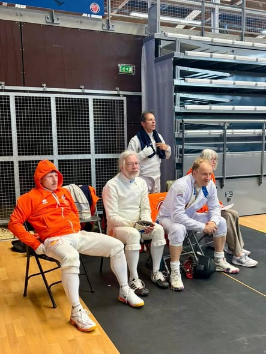
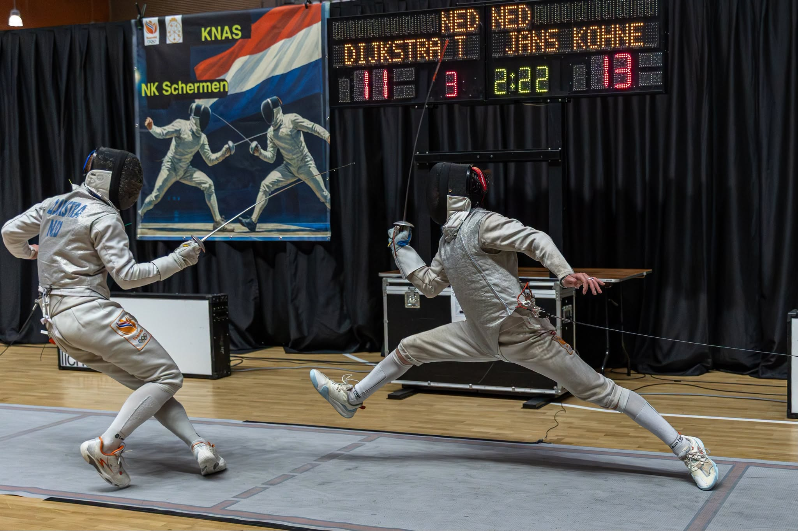
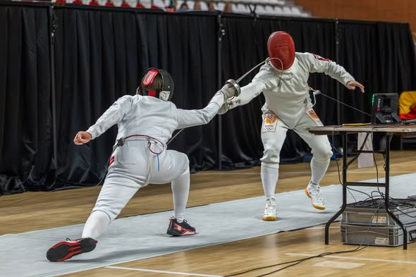
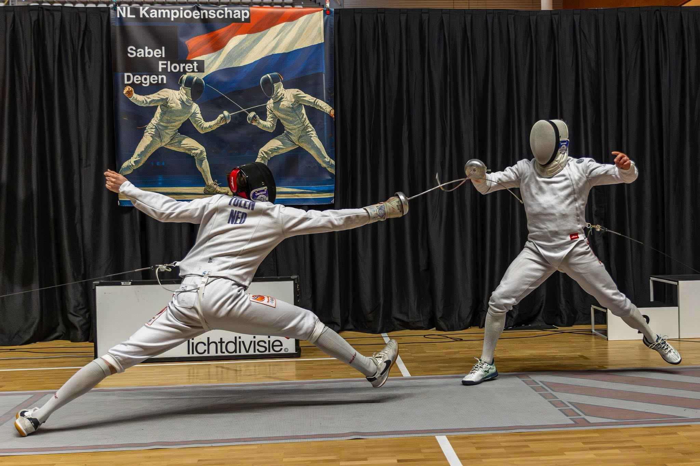

Schermsport Nederland
Scherp op de toekomst.
Ontdek de elegantie, snelheid en strategie van de schermsport. Van breedtesport tot topsport: KNAS verbindt verenigingen, sporters, coaches en vrijwilligers in heel Nederland.
Vind een schermclub bij jou in de buurt
Gebruik de verenigingenpagina om direct clubs, trainingsdagen en contactgegevens te bekijken.
Laatste updates


Komende toernooien
mei18
Nederlandse Kampioenschappen 2026
Amsterdam • Floret en degen • 09:00 - 18:30
jun15
Nederlands Kampioenschap Degen
Amsterdam • Senioren • 09:00 - 18:00
jun22
FIE World Cup Parijs
Internationaal • Floret • Team NL deelname